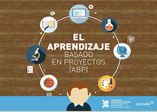
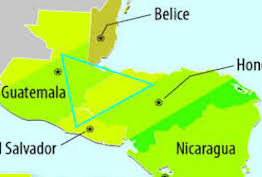
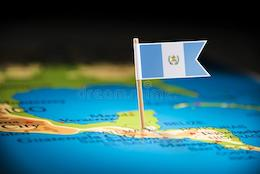
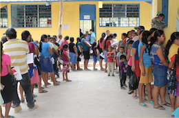
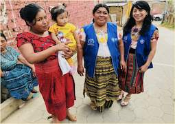
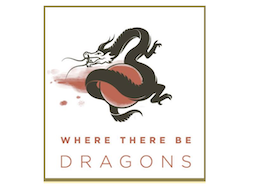
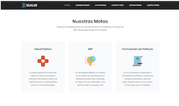

Qué es el ABP?

El ABP es un método bastante nuevo de aprendizaje que enfatiza el proceso de aprender en lugar de los resultados. Hay una fórmula suelto para crear un proyecto, la meta final. No hay exámenes ni pruebas, pero se necesita practicar habilidades en el proceso de formular el proyecto.
Descripción de Nuestra Clase
Nuestro clase se llama Identidades Latinoamericanos y se enseña de modelo ABP. Se trata de comprender partes centrales de la identidad latinoamericano por los proyectos. Enfocamos en problemas muy específicas y combinamos este sabiduría para aprender más sobre las identidades entre las conexiones.
Escalones de Nuestro Equipo

Conversábamos sobre cuales temas nos interesa que también son prevalentes en el triángulo norte. Todos les interesa la salud, las ciencias, y la medicina, pues decidimos enfocar en un tema que incluye todo: la salud pública.
Abrumados: un Foco en Guatemala

Después de encontrar nuestra tema de investigación, necesitamos delimitar nuestra región de foco. Estábamos enfocando en el Triángulo Norte, que incluye tres países, pero decidimos enfocar en Guatemala. Durante nuestra primera ronda de investigaciones, encontramos mucho información sobre el sistema de salud pública y inequidad en el acceso a servicios de salud en Guatemala, pues decidimos continuar con un país como nuestro enfoque.
Investigaciones Especializadas

El tema de salud pública fue bastante grande y necesitamos reducir el tamaño de la investigación. Pues, cada miembro del grupo escogió un tema pequeño de interés en salud pública en Guatemala: Megha investigue la salud de la mujer, Riley investigue la medicina y las enfermedades, Tomas investigue el agua, y Aaliyah investigue los ONGs de salud. Después de nuestra segunda ronda de investigación, tuvimos mucha información sobre salud pública, pero no vimos la conexión entre cada investigación.
¡Eureka! Inequidad de Salud y Falta de Educación

Nuestros investigaciones trataron de la salud, pero no aparecía un tema central que unió todo. Este momento era un punto de dificultad para el grupo – todos tenían que leer las investigaciones de los otros miembros del grupo y trabajar para buscar un vínculo. Últimamente, decidimos en la inequidad de salud – un tema que refleja problemas con las mujeres, la calidad de servicios médicos, el agua, y las organizaciones comunitarias – y volvimos al periodo de investigación.
Entrevistas con Expertos

Hablamos con unos contactos en Guatemala de Señora, y también con un collego del Padre de Riley que trabaja en el sector de políticas de salud en Centroamerica. También buscamos en el web para otros expertos para entrevistar. El proceso de buscar personas, conseguir un "Si, podemos tener una entrevista!", y establecer los horarios de las reuniones tomó mucho tiempo, y necesitábamos ser muy organizados y adaptables. En nuestras entrevistas, aprendimos mucho sobre las condiciones de salud en Guatemala ahora mismo. Hablaron con expertos en este área, como un director de políticas y comunicación en centroamérica de una compañía farmacéutica grande, y aprendieron mucha información útil que nos ayudaría con el producto.
Desarollo de Producto: MVP

Queríamos un producto que combinó nuestras investigaciones con iniciativas que ocurren ahora misma en Guatemala para mejorar el sector de salud pública. Esta intersección existe en la área de formulación de políticas y iniciativas. Investiguemos iniciativas del Congreso de Guatemala, y fue un buen vistazo a los problemas que enfrentan Guatemala ahora mismo. Queríamos poner los usuarios de nuestra producto en los mismos zapatos de los políticos para mostrarles las problemas de salud más urgentes. Pues, creamos un actividad en que usuarios pretender ser políticos. Creamos una lista de políticas, algunas de hechos, algunas ficticios, y usuario leen la lista y escojan lo que importa a ellos.
Creamos Más Páginas para el Sitio de Web
Después de terminar el mvp, creamos más páginas para informar el usuario. En cuanto a nuestro grupo, escribimos sobre nuestro proceso con ABP aquí y nuestra experiencia como estudiantes de español en la página “¿Quienes Somos?” En cuanto a inequidad de salud en Guatemala, creamos una página de “Involucrarse” para ofrecer descripciones de ONGs en Guatemala que se trata a la inequidad de salud.
Compartir

Queríamos un producto que combinó nuestras investigaciones con iniciativas que ocurren ahora misma en Guatemala para mejorar el sector de salud pública. Esta intersección existe en la área de formulación de políticas y iniciativas. Investiguemos iniciativas del Congreso de Guatemala, y fue un buen vistazo a los problemas que enfrentan Guatemala ahora mismo. Queríamos poner los usuarios de nuestra producto en los mismos zapatos de los políticos para mostrarles las problemas de salud más urgentes. Pues, creamos un actividad en que usuarios pretender ser políticos. Creamos una lista de políticas, algunas de hechos, algunas ficticios, y usuario leen la lista y escojan lo que importa a ellos.